Gerçek karakter dengesi
"En güçlü mech" yok. 4 rol, 8 mech; her birinin kendine göre güçlü ve zayıf yönü var. Kazandıran şey yetenek.
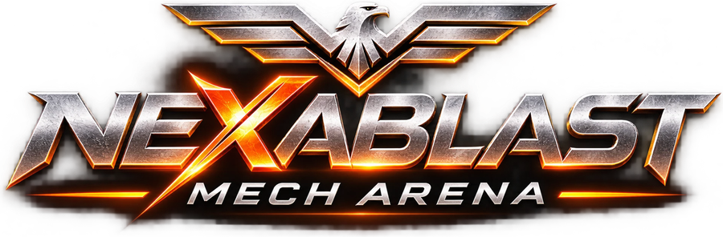
TAKTİKSEL MECH SAVAŞI
Dev savaş robotları, taktiksel arenalar ve durmayan çatışma. 8 pilot, tek arena – son ayakta kalan sen ol.
YAKINDA ANDROID VE iOS'TA
01 / SAVAŞA HAZIRLAN
NEXABLAST'ta doğru pozisyon ve doğru zamanlama savaşın kaderini değiştirir. Siperin arkasına geç, şarjör değiştir, rakibi bir varilin yanına çek – ve tek atışla arenayı ateşe ver.
SAVAŞ MODLARINI İNCELE →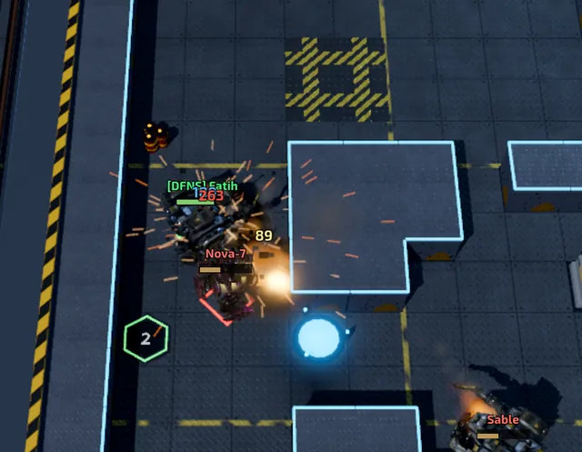
02 / NEDEN NEXABLAST
"En güçlü mech" yok. 4 rol, 8 mech; her birinin kendine göre güçlü ve zayıf yönü var. Kazandıran şey yetenek.
Siperlere saklan, pozisyon değiştir, patlayıcı varilleri düşmanın aleyhine kullan.
Hasar aldıkça mech'in duman tüter, alev alır, zırh plakalarını kaybeder. Vidalar ve hurdalar etrafa saçılır.
İnternetten eşleş, aynı Wi-Fi'da arkadaşlarınla oyna ya da botlara karşı tamamen internetsiz savaş.
Herkes tek, takım savaşı, düello, sona kalan kazanır: aynı arenada 8 pilota kadar.
Mech ustalığı, araştırma laboratuvarı, günlük görevler, haftalık kurallar, etkinlikler ve sezon ödülleri.
03 / OYUN MODLARI
Üç dakikalık anlık kapışmadan 40 görevlik hikâyeye: kendi savaş ritmini seç. Her maç kredi, deneyim ve sandık kazandırır.
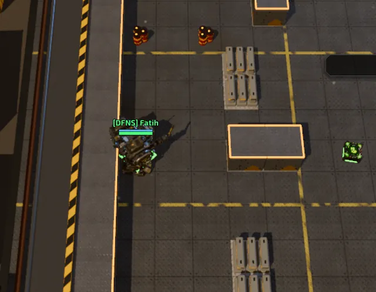
03:00Küçük arenada 3 dakikalık, tek dokunuşla başlayan kapışma. Boş yerleri botlar doldurur.
Herkes herkese karşı. 25 skora ilk ulaşan kazanır.
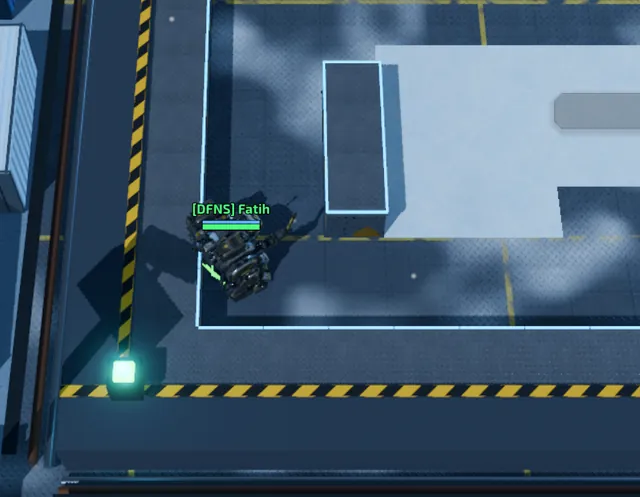
4 VS 4Mavi ve kırmızı iki takım; birlikte hareket eden kazanır.
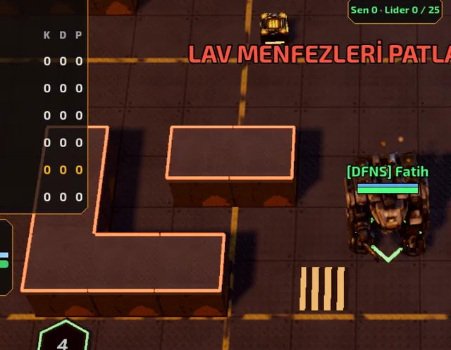
10:0010 dakika boyunca durmadan savaş; ölsen de geri dönersin.
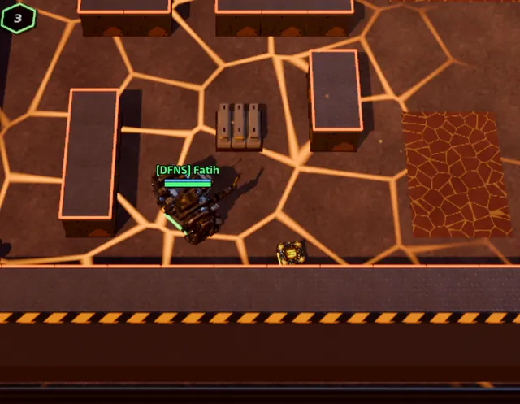
1 ♥Tek can. Daralan güvenli bölge herkesi ortaya iter; son ayakta kalan kazanır.
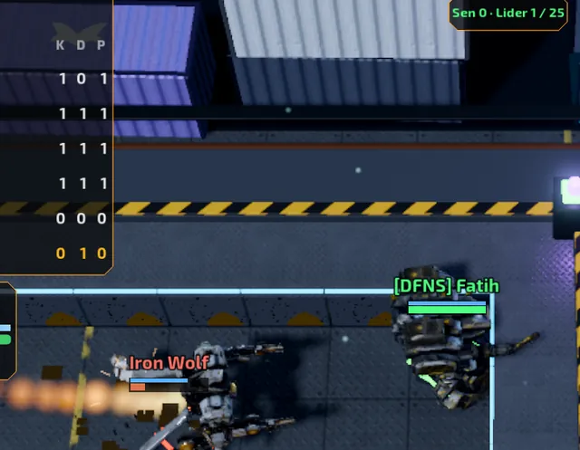
1 VS 1Bire bir, üç rauntluk saf yetenek testi.
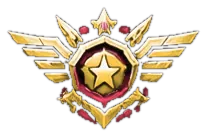
RANKEDLig sistemiyle sıralamada yüksel, sezon ödüllerini topla.
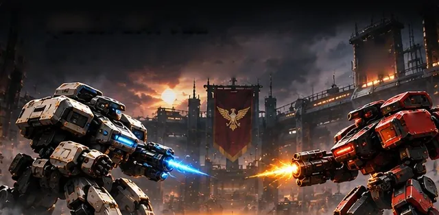
8 × 5Pilot Raider ve prototip R-01'in hikâyesi: 8 bölüm, 40 görev, seslendirmeli ara sahneler.
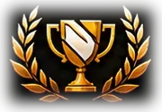
WEEKLYDemir Kolezyum'da dalga dalga gelen düşmanlara karşı hayatta kal, turnuvalarda yarış.
04 / MECH KOLEKSİYONU
En iyi mech yok. Takımını ve savaş stilini tamamlayan mech var.
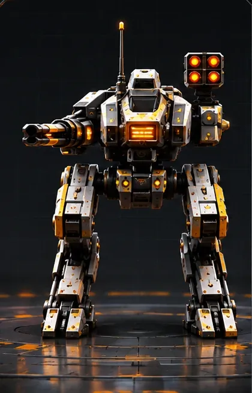
⚡ HIZLI
Hafif, hızlı kanat saldırganı. Çatışmaya ilk giren, işi bitince ilk kaybolan pilotların mech'i.
ÖZEL YETENEK (R)Jet Atılımı – bir anda ileri fırlar, çatışmaya girer ya da kaçar.
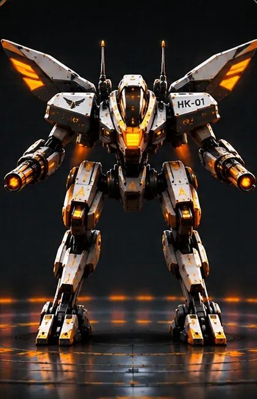
⚡ HIZLI
Ultra hafif uçan keşifçi; oyunun en hızlı mech'i. Kanatlardan vurur, yakalanmadan çekilir.
ÖZEL YETENEK (R)Faz Sıçraması – kısa mesafeye ışınlanır.
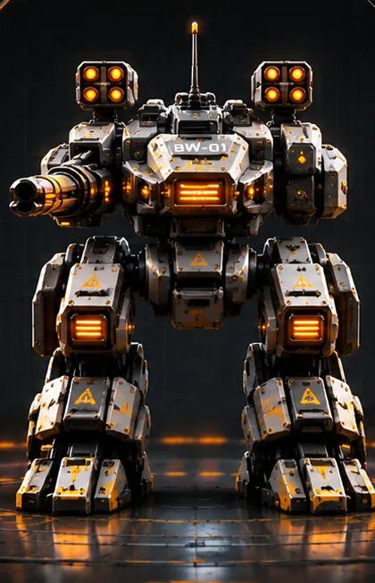
🛡 TANK
Ağır tank ve alan kontrolcüsü. Takımının önünde durur, hattı tutar.
ÖZEL YETENEK (R)Aegis Kalkan Duvarı – önüne gelen hasarın büyük kısmını emen enerji duvarı.
🛡 TANK
Süper ağır yürüyen kale; oyunun en dayanıklı mech'i. Yavaş ama durdurulamaz.
ÖZEL YETENEK (R)Kale Modu – yerinde kök salar ve neredeyse yıkılmaz olur.
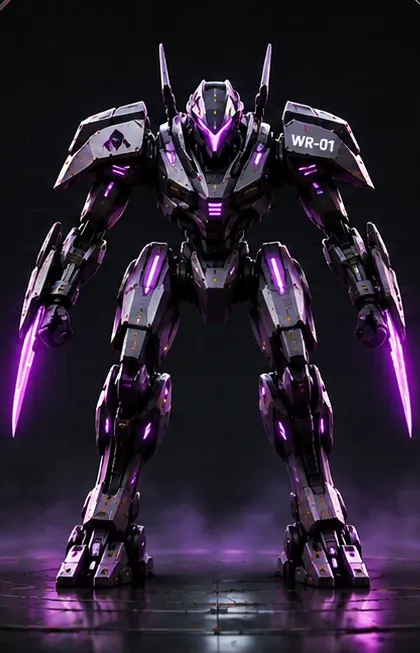
💀 HASAR
Yırtıcı avcı. Sert vurur, düşmanından çaldığı enerjiyle ayakta kalır; ama zırhı incedir.
ÖZEL YETENEK (R)Enerji Sömürüsü – verdiği hasarın bir kısmını can olarak geri alır.
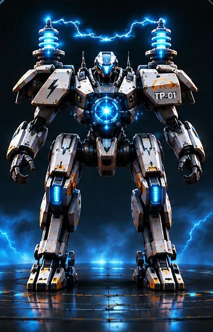
💀 HASAR
Dört bacaklı fırtına çağırıcı. Kalabalığın ortasına dalar, herkesi aynı anda yakar.
ÖZEL YETENEK (R)Fırtına Dalgası – çevresindeki herkese patlayan enerji dalgası.
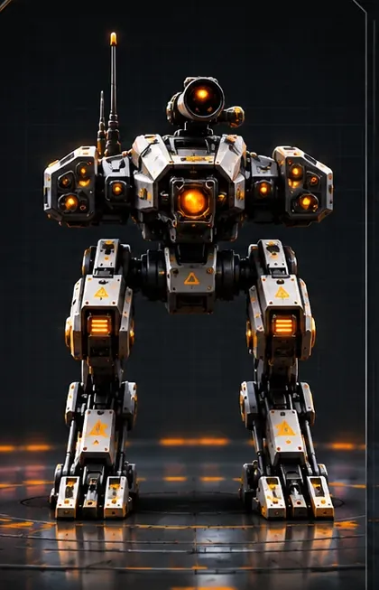
🎯 NİŞANCI
Uzun menzilli keskin nişancı. Uzaktan en çok hasarı verir; yakında etkisizdir ve çabuk düşer.
ÖZEL YETENEK (R)Optik Pelerin – görünmez olur, pozisyon değiştirir.
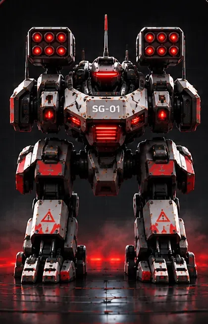
🎯 NİŞANCI
Ağır topçu platformu. Siperin arkasından alanı ateşe boğar; yakın dövüşte savunmasızdır.
ÖZEL YETENEK (R)Topçu Baraj Ateşi – geniş bir alana ateş yağdırır.
Yakında: Destek ve Suikastçı rolleri, birbirinin counter'ı olan yeni mech'ler.
05 / GEZEGENLER VE ARENALAR
Her gezegen farklı tehlikeler ve taktiksel fırsatlar sunar. Savaş alanını tanı, çevreyi lehine kullan.
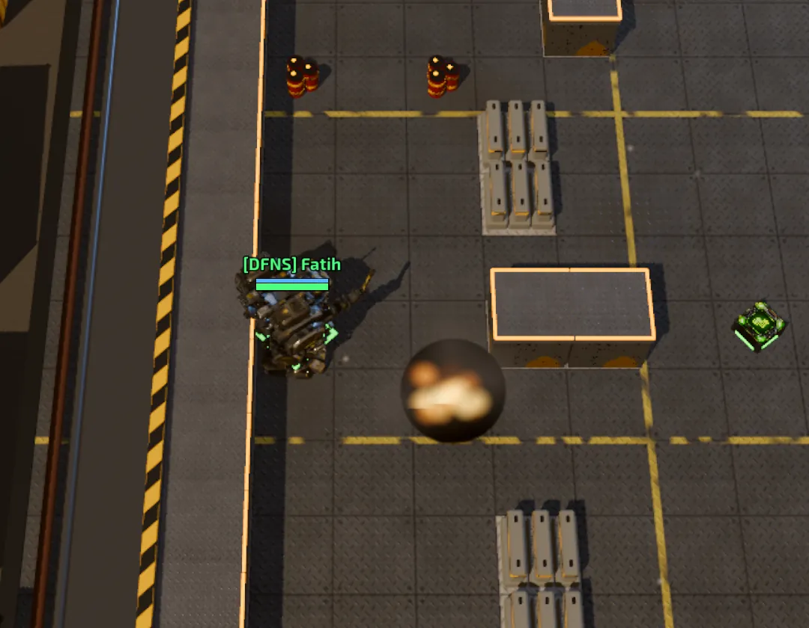
01 / TERRATozla kaplı eski dünya. Çelik güverteler, hurda çukurları ve konteyner koridorları.
Tehlike: kum fırtınası görüşü kapatır
Toz Çanağı Kolezyumu · Hurda Çukuru
Kızıl gezegenin dökümhaneleri. Yerin altında lav kaynar, zemin her an patlayabilir.
Tehlike: patlayan lav menfezleri
Dökümhane Çekirdeği · Cüruf Yolu
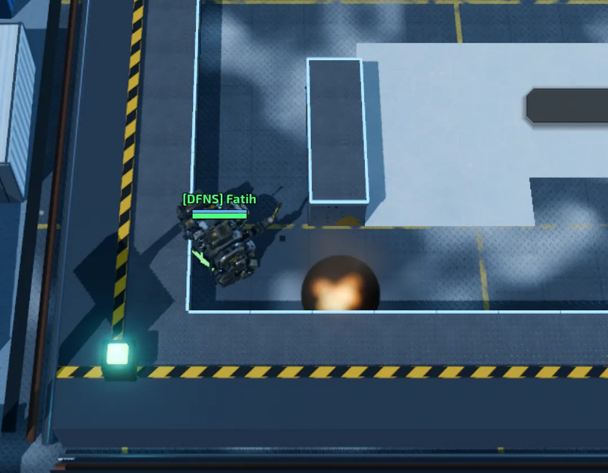
03 / EUROPABuz kubbelerin altındaki üsler. Kar yığıntıları ve kayganlaşan zemin.
Tehlike: buzda kayan mech'ler
Buz Kubbe · Kırağı Mahzeni
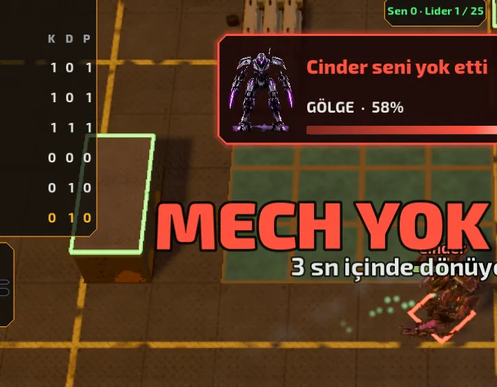
04 / TITANMetan rafinerileri ve boru hatları. Kimyasal sızıntılar her yerde.
Tehlike: tutuşan metan havuzları
Rafineri Güvertesi · Boru Hattı 7
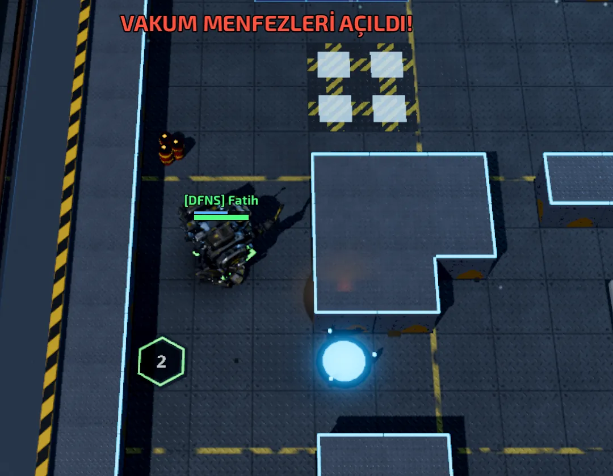
05 / HALOYörüngedeki istasyon. Cam zeminin altında uzay, düşük yerçekimi.
Tehlike: vakum menfezleri ve düşük yerçekimi
Halo Avlusu · Hava Kilidi Halkası
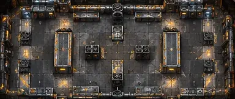
Toz Çanağı Kolezyumu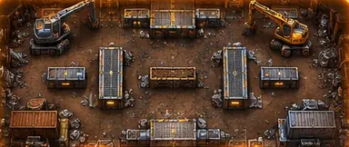
Hurda Çukuru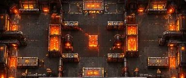
Dökümhane Çekirdeği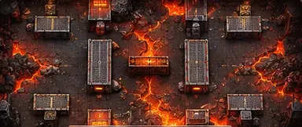
Cüruf Yolu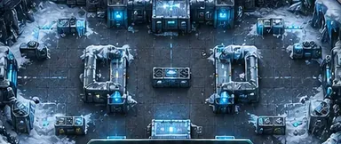
Buz Kubbe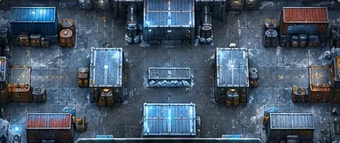
Kırağı Mahzeni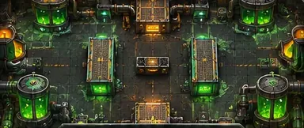
Rafineri Güvertesi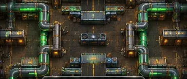
Boru Hattı 7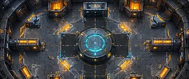
Halo Avlusu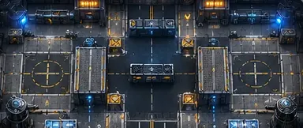
Hava Kilidi Halkası06 / SAVAŞ VE GELİŞİM
Arenadaki ikmal sandıklarını kap, mech'ini ustalaştır ve bir sonraki çatışmaya daha güçlü gir.
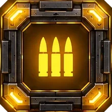
Mermi miktarını artırır.
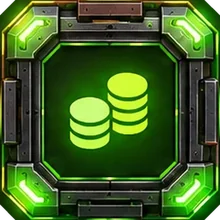
Oyun kredisi kazandırır.
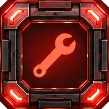
Robotun canını yeniler.
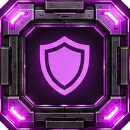
Aşırı yük, hız ya da kalkan.
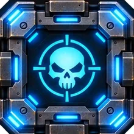
3 saniye +%10 hasar.
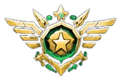
Bir mech'le oynadıkça ustalaşırsın. 5, 10, 15 ve 20. ustalık seviyelerinde özel yeteneğin (R) güçlenir.
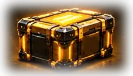
Maçlardan topladığın araştırma disklerini zırh, hız ve kalkan becerilerine yatır.
Alaşımlar, çıkartmalar, profil simgeleri ve çerçeveler. Mech'in senin imzanı taşısın.
Klanını kur, arkadaşlarınla sohbet et, liderlik tablosunda ve sezon liglerinde yüksel.
07 / OYUN DENEYİMİ
Hızlı eşleşme, kodla odaya katılma, arkadaşlarınla oda kurma ve dereceli lig.
İNTERNET GEREKLİAynı Wi-Fi ağındaki arkadaşlarınla internete ihtiyaç duymadan oyna.
AYNI WI-FI AĞISiper alan, şarjör değiştiren, insan gibi oynayan botlara karşı her modu internetsiz oyna.
BOTLARA KARŞI08 / SİSTEM GEREKSİNİMLERİ
Otomatik çözünürlük kare hızına göre görüntüyü ayarlar; beş grafik seviyesi (Çok Düşük'ten Ultra'ya) ve ilk açılıştaki cihaz testi en uygun ayarı kendisi seçer.
| Minimum | Önerilen | |
|---|---|---|
| İşletim sistemi | Windows 10 64-bit | Windows 10 / 11 64-bit |
| İşlemci | Intel Core i3 (8. nesil) / AMD Ryzen 3 | Intel Core i5 / AMD Ryzen 5 |
| Bellek | 4 GB RAM | 8 GB RAM |
| Ekran kartı | Vulkan destekli, Intel UHD 620 veya eşdeğeri | GeForce GTX 1050 / Radeon RX 560 veya üstü |
| Depolama | 1 GB boş alan | 1 GB boş alan (SSD) |
| İnternet | Çevrimiçi modlar için gerekli | Geniş bant |
| Minimum | Önerilen | |
|---|---|---|
| Sürüm | Android 7.0 | Android 10 ve üstü |
| İşlemci | 64-bit, 4 çekirdek | 8 çekirdek (Snapdragon 7 serisi veya eşdeğeri) |
| Bellek | 3 GB RAM | 4 GB RAM ve üstü |
| Grafik | OpenGL ES 3.0 | OpenGL ES 3.2 |
| Depolama | 500 MB boş alan | 1 GB boş alan |
Çevrimiçi modlar için internet bağlantısı gerekir. Sistem gereksinimleri tahminidir. iOS gereksinimleri yayın öncesinde duyurulacak.
GLOBAL COMBAT SYSTEM
PILOT, YOUR ARENA IS WAITING
Mech'ini seç. Siperini al. Rakiplerini alt et. NEXABLAST: Mech Arena'da kendi efsaneni yazmaya başla.
PC indirme bağlantısı çok yakında burada. Şimdilik tarayıcıda oynayabilirsin.